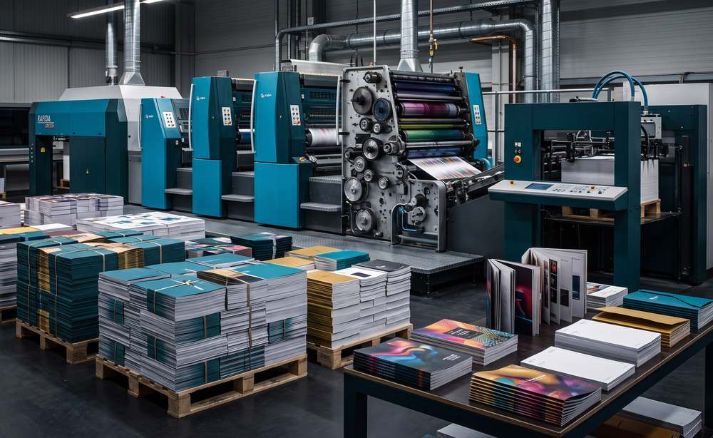

Offset Printing
Overview
Volume without losing the detail.
For larger quantities, offset gives more consistent colour across the run and a lower unit cost. Prepress, proofing, printing and finishing are managed as one process, with stock and coating specified alongside the design.
Why it matters: Offset is the better fit once quantities scale up — the cost per unit drops and colour stays consistent across the full run.
What's Included
- Commercial print production
- Corporate literature
- High-volume runs
- Prepress and colour proofing
- Finishing and binding
Frequently Asked
Common questions
At what quantity does offset make sense over digital?
Generally once a run moves into higher volumes, where offset's lower unit cost outweighs digital's setup speed.
Do you handle finishing and binding as well as printing?
Yes, finishing and binding are managed as part of the same production process.
Related Services